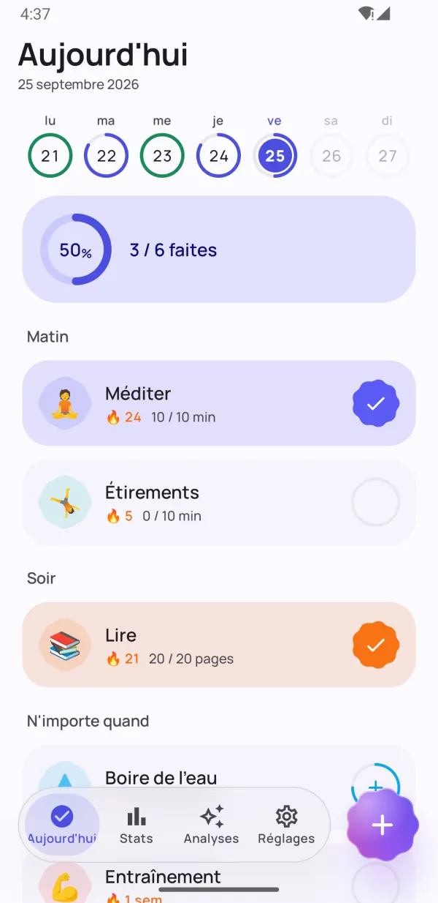
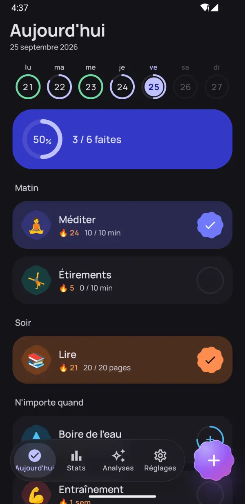
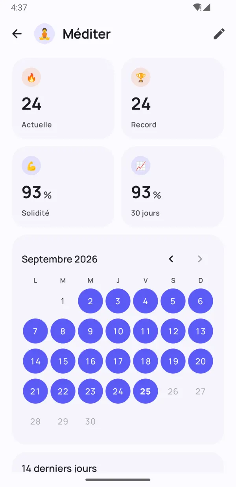
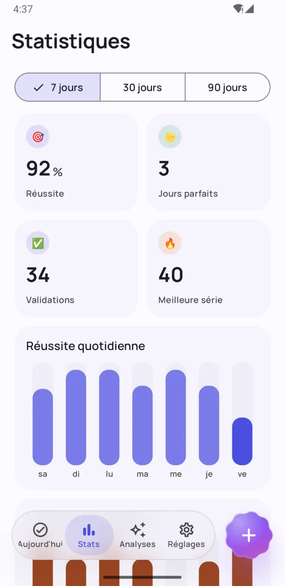
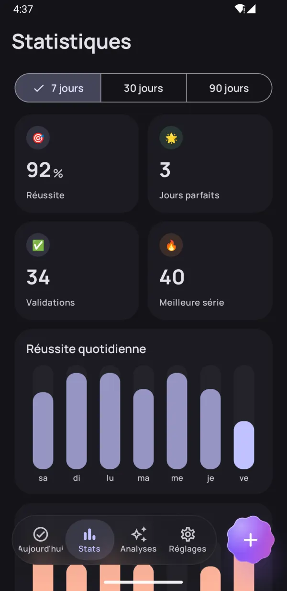
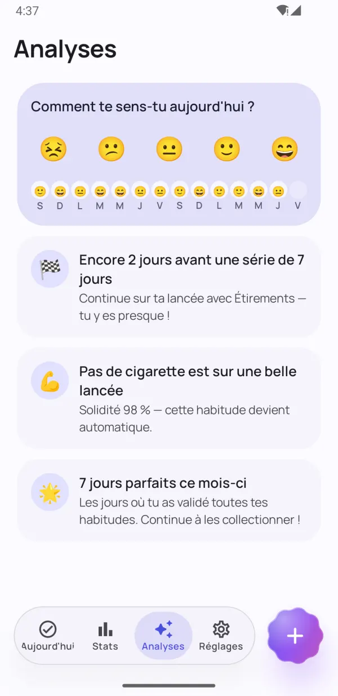
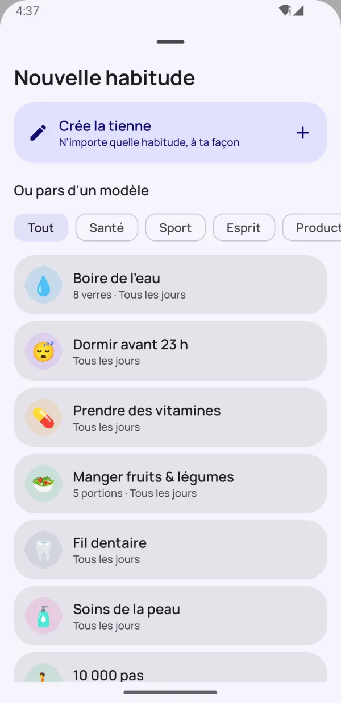
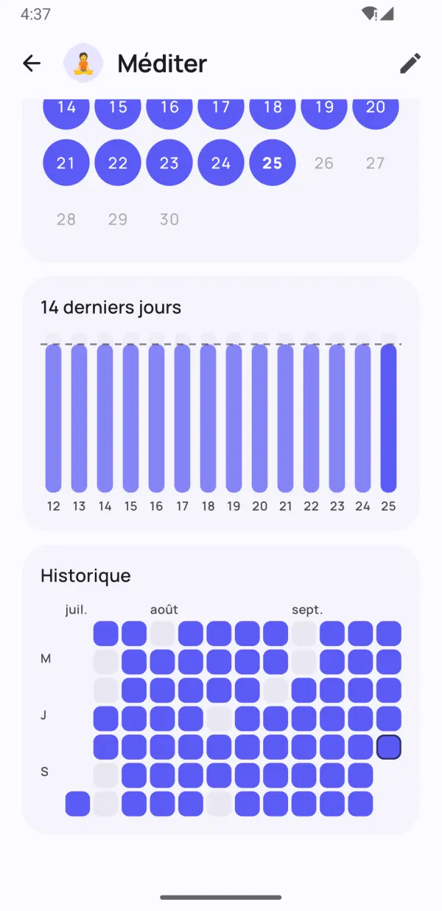

Petites habitudes.
Grands changements.
Dotday t'aide à prendre de bonnes habitudes et à te défaire des mauvaises — sans pression. Valide-les en un geste, garde ta série intacte même les jours chargés et découvre ce qui marche vraiment pour toi.
- Gratuit
- Sans inscription
- Données sur ton téléphone
- 13 langues


Conçu pour que tes habitudes durent
Tout ce qu'il faut pour rester régulier — et rien qui ne gêne.
Toute ta journée en un geste
Les groupes matin, après-midi et soir transforment ta routine en une simple checklist. Un geste et c'est fait.
- Oui/non, compteurs, minuteurs et habitudes à arrêter
- Le bandeau de la semaine montre chaque jour d'un coup d'œil
- « Fait » et « Dans 10 min » directement depuis le rappel

Des séries qui pardonnent les mauvais jours
Jours de repos, programmes flexibles et gels de série t'aident à tenir. L'indice de solidité montre à quel point une habitude est vraiment ancrée — pas seulement la longueur de ta série.
- Saute un jour sans casser ta série
- Gels de série pour les jours chargés ou de maladie
- Indice de solidité de 0 à 100 %


Vois tes vrais progrès
Cartes de chaleur, calendriers et tendances de réussite te montrent exactement où tu en es sur 7, 30 et 90 jours.
- Carte de chaleur pour chaque habitude
- Meilleure série et taux de réussite
- Superbe en mode clair comme en mode sombre

Des analyses qui te motivent
Note ton humeur en une seconde et Dotday trouve ce qui marche vraiment : tes meilleurs jours, les plus difficiles, et les habitudes qui améliorent ton humeur.
- Humeur du jour en un geste
- Des encouragements avant ton prochain palier
- Trouve les habitudes qui te rendent plus heureux
Petits détails, grande différence
Des fonctionnalités pensées pour un suivi sans effort.
Widgets d'écran d'accueil
Valide tes habitudes du jour, suis une série ou une carte de chaleur — sans ouvrir l'appli.
Des rappels efficaces
Valide ou reporte une habitude directement depuis la notification.
Minuteur intégré
Les habitudes chronométrées ont un minuteur avec notification en direct.
Health Connect
Pas, sommeil et séances de sport peuvent valider tes habitudes automatiquement.
40 modèles
Eau, lecture, sport, méditation, arrêt du tabac — démarre en quelques secondes.
Organise ta journée
Regroupe tes habitudes en matin, après-midi et soir.
Notes et humeurs
Ajoute une note à n'importe quel jour et vois comment tes habitudes influencent ton humeur.
Mode sombre & AMOLED
Couleurs Material You et thème noir intégral pour écrans OLED.
Sauvegarde & export
Exporte tout en JSON ou CSV avec Pro, et restaure-le sur un nouveau téléphone.
Un aperçu de l'appli
Des habitudes qui durent Vois tes vrais progrès Tes stats en un coup d'œil Des analyses qui motivent 
Démarre vite avec 40 modèles Superbe en mode sombre 
Chaque jour, joliment suivi Privé. Sans compte. Sans pub.
Prêt en moins d'une minute
Pas de compte, pas de configuration, rien à apprendre. Lire le guide complet →
Choisis tes habitudes
Pars de 40 modèles ou crée les tiennes — n'importe quelle habitude, à ta façon.
Valide chaque jour
Un geste sur l'écran Aujourd'hui, un widget ou la notification.
Regarde-les s'ancrer
Séries, indice de solidité et analyses montrent tes progrès grandir.
Privé par nature
Pas de compte. Pas d'inscription. Pas de pub. Tes habitudes, notes et humeurs restent uniquement sur ton téléphone — nous ne les voyons jamais. Politique de confidentialité
- Pas de compte
- Pas de pub
- Hors ligne
- Tes données, ton téléphone
Débloque tout avec Pro
L'appli de base est gratuite pour toujours. Passe à Pro pour des habitudes illimitées et toutes les fonctionnalités — essai gratuit de 7 jours.
- Habitudes illimitées
- Historique complet et statistiques sur 90 jours
- Toutes les analyses et les liens avec l'humeur
- Suivi automatique avec Health Connect
- Tous les widgets
- 5 gels de série par mois
- Jusqu'à 5 rappels par habitude
- Export en JSON et CSV
Abonnement mensuel ou annuel, ou achat unique à vie. Résiliable à tout moment dans Google Play.
Questions fréquentes
Dotday est-il gratuit ?
Oui. L'appli de base est gratuite pour toujours : jusqu'à 5 habitudes, rappels, séries, le widget du jour et 30 jours de statistiques. Dotday Pro débloque les habitudes illimitées et toutes les fonctionnalités, avec un essai gratuit de 7 jours.
Faut-il créer un compte ?
Non. Dotday fonctionne sans compte, sans inscription et sans connexion Internet. Il suffit de l'installer et de commencer.
Où sont stockées mes données ?
Uniquement sur ton téléphone. Tes habitudes, notes et humeurs ne quittent jamais ton appareil. Avec Pro, tu peux exporter une sauvegarde JSON ou CSV à tout moment.
Que se passe-t-il si je rate un jour ?
Tes progrès ne disparaissent pas. Tu peux sauter le jour comme jour de repos, utiliser un gel de série ou te fixer un objectif hebdomadaire plutôt que quotidien. L'indice de solidité baisse en douceur au lieu de retomber à zéro.
Quels types d'habitudes puis-je suivre ?
Quatre types : oui/non (« méditer »), compteurs (« 8 verres d'eau »), minuteurs (« 30 minutes de lecture ») et habitudes à arrêter (« ne pas fumer »).
Comment transférer mes habitudes sur un nouveau téléphone ?
Avec Dotday Pro, ouvre Réglages → Tes données → Exporter une sauvegarde et enregistre le fichier JSON. Sur le nouveau téléphone, installe Dotday et choisis Restaurer une sauvegarde — la restauration est gratuite.
Existe-t-il une version iPhone ?
Pas encore — Dotday est pour l'instant disponible sur Android via Google Play.
Comment résilier Pro ?
Ouvre Google Play → Profil → Paiements et abonnements → Abonnements, choisis Dotday et appuie sur Résilier l'abonnement. Un achat à vie n'a jamais besoin d'être résilié.
Des habitudes fondées sur la science
Des guides pratiques appuyés sur des recherches évaluées par des pairs. Chaque chiffre renvoie à sa source.
Comment créer une habitude : une méthode en 7 étapes fondée sur la recherche
Créer une habitude, c'est répéter une petite action après le même signal quotidien jusqu'à ce qu'elle devienne automatique. Voici comment prendre une nouvelle habitude étape par étape, et combien de temps cela prend vraiment.
7 min de lectureLire l’article →La règle des 21 jours : faut-il vraiment 21 jours pour prendre une habitude ?
La règle des 21 jours est un mythe né dans un livre de développement personnel de 1960. La recherche suggère que la plupart des habitudes demandent plutôt deux à cinq mois, et qu'un jour raté ne compte presque pas.
7 min de lectureLire l’article →Comment utiliser un habit tracker (et pourquoi ça marche)
Un habit tracker fonctionne parce qu'il rend l'auto-surveillance automatique — et suivre ses progrès aide de façon fiable à atteindre ses objectifs. Voici ce que dit la recherche, comment bien mettre en place ton suivi d'habitudes et les erreurs qui font abandonner.
7 min de lectureLire l’article →Commence aujourd'hui par une petite habitude
Ton futur toi te dira merci. 🌱
DISPONIBLE SURGoogle Play